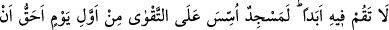
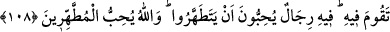
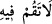

erbabının kisvesine bürünmüşlerin özelliğidir. Bunu “müminler arasına” hak
tâliplerinin ve hiçbir art niyet gütmeden davasını ızharda sâdık olan müminlerin arasına
“ayrılık sokmak için” yaparlar. Yani her türlü hileye baş vurarak Allah uğrunda
birbirlerinin kardeşi olanları tefrikaya düşürmek için yaparlar. Bunu da bazan onlarla
birlikte sohbet etmeyi ve yol arkadaşlığı yapmayı isteyerek, bazan da meşayihe
hizmetten ve ihvanla sohbetten koparmak için onlara çeşitli beldeleri, oralardaki
nimetlerin çokluğunu, havalarının güzelliğini, halkının cömertliğini anlatıp onları bu
taifeyi özendirmek suretiyle yaparlar.
“Daha önce Allah ve Rasûlü’ne karşı savaşmış olanı beklemek için”. Müminleri,
fakr ve marifet iddiacılarından olan ve her şeyi mübah sayan (İbâhiyye) kimselerle
sohbet etme belasına düşürmek için yaparlar. Onlar Allah’ın dinini ve şeriatını terk
ederek Allah’la, Rasûlü’ne uymayı ve onun sünnetini ihya etmeyi terk ederek de Rasûlü
ile muharabe etmektedirler.
“Onlar:” sizi kendisine davet ettiğimiz şeylerle size “iyilikten başka bir niyetimiz
yoktu.” diye mutlaka yemin edecekler. Oysa Allah onların” davetlerinde ve
yeminlerinde “kesinlikle yalan söylediklerine şahittir.” et-Tevîlatü’n-Necmiyye’de bu
şekilde zikredilmiştir.
108. Onun içinde asla namaz kılma! İlk günden takvâ üzere kurulan mescid
(Kubâ mescidi), içinde namaz kılmana elbette daha lâyıktır. Onda temizlenmeyi
seven adamlar vardır. Allah da çok temizlenenleri sever.
Ey Muhammed! “Onun içinde” o münâfıkların mescidinde “asla namaz kılma.”
Müfti Sa‘dî Çelebi demiştir ki: “
(Orada asla durma)” demek, “O mescidde
asla namaz kılma.” demektir. Burada kıyam (durma) ile namaz kastedilmiştir. Arapların
“Falan, gece kaimdir” yani geceyi namaz kılarak geçirir, sözünde de aynı durum söz
konusudur. Şu sahih hadis de bu kabildendir: “Kim Ramazan ayında inanarak ve
sevabını Allah’dan bekleyerek kaim olursa geçmiş günahları bağışlanır.”
Var olduğu ve tesis edildiği “ilk günden” itibaren “takvâ üzere kurulan mescid,”
olan Kubâ mescidi, “içinde namaz kılmana elbette daha lâyıktır.”
Kubâ Mescidi’ni Rasûlullah (s.a.) tesis etmiş ve Kubâ’da kaldığı günlerde orada
namaz kılmıştır. et-Tibyân’da kaydedildiğine göre “takva üzere tesis edilen/kurulan
mescid” ifadesi, Allah’a itaat üzere duvarları bina edilmiş, temelleri yükseltilmiş
mescid mânâsına gelmektedir. Haddâdî ise, “takva üzere” ifadesinin “Allah rızası için”
mânâsına geldiğini söylemiştir. “İlk günden” ifadesinin mânâsı, “bina edildiği ilk